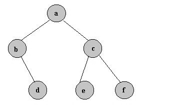

Este algoritmo sólo se puede aplicar a grafos no dirigidos.
Se llama árbol a todo grafo no dirigido conexo acíclico.
NOTA: Recordemos que un bucle es una arista en la que los dos extremos coinciden y que un grafo se dice simple sino posee bucles.
En caso de haber más de un vértice la definición anterior es equivalente a cada uno de los siguientes grupos de condiciones.
Caracterización
Si G es un árbol con más de un vértice los siguientes grupos de condiciones son equivalentes:

La longitud o coste del árbol es la suma de los pesos de las aristas del árbol.
Sea G un grafo no dirigido conexo ponderado G=(V,E).
Se llama árbol generador de G a todo subgrafo generador que sea conexo y acíclico.
NOTA: Recordemos que un subgrafo G’ de G es subgrafo generador de G si los conjuntos de vértices de G y G’ coinciden.
Se llama árbol generador de mínimo coste de G (o de expansión mínima) a todo árbol generador de G cuyo coste sea menor o igual que el de cualquier otro árbol generador de G.
El árbol generador de mínimo coste de un grafo dado G no tiene porqué ser único.
Para determinar el árbol generador de mínimo coste se utiliza el algoritmo de Kruskal.
Sea G un grafo no dirigido ponderado, el algoritmo de Kruskal proporciona un árbol generador de mínimo coste.
Si los pesos son distintos dos a dos el árbol generador de mínimo coste es único.
Se trata de un algoritmo sencillo que se aplica según los siguientes pasos:
Paso 1: Se selecciona, de manera arbitraria, cualquier nodo y se conecta (se selecciona la arista) al nodo más cercano (menor coste) distinto de éste.
Paso 2: Se identifica el nodo no conectado más cercano a un nodo conectado, y se conectan estos dos nodos.
Si hay nodos sin conectar, ir al Paso 2.
en otro caso, FIN
Los empates para el nodo más cercano distinto (paso 1) o para el nodo no conectado más cercano (paso2), se pueden resolver de forma arbitraria y el algoritmo conduce a una solución óptima. No obstante, estos empates son indicativos de que pueden existir (aunque no necesariamente) soluciones óptimas alternativas.
Todas esas soluciones se pueden identificar si se analizan las distintas formas de resolver los empates hasta el final.